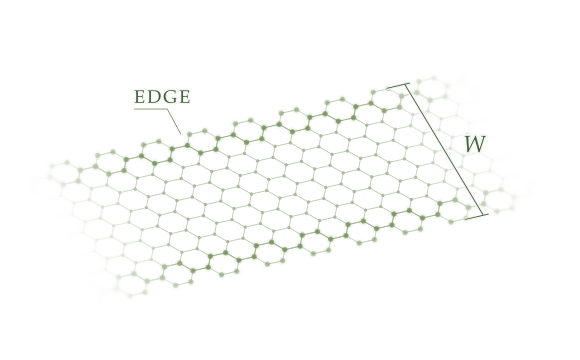

Semiconductor research · HKUST
Device physics.
With an edge.
I’m Zhirong Peng, a Ph.D. candidate studying how the smallest details of a material shape the way a transistor works.
My work connects atomic edges, quantum transport and device engineering, with experience in both modeling and experiment.
Hong Kong / Ph.D. expected 2027

How small can a transistor go?
Physics, modeling & experiment
Advanced transistor R&D
Small structures.
Device-level questions.
What limits a narrower transistor? How can we engineer its edges? I work from the underlying physics toward practical device choices.
01
Edge engineeringLet the environment choose the edge
Connecting sulfur conditions, stable terminations and transistor performance.
Let the environment choose the edge
Connecting sulfur conditions, stable terminations and transistor performance.
The question
Which atomic edge terminations are preferred under different sulfur conditions, and how do those terminations shape FET operation?
My contribution
Identified thermodynamically preferred terminations and established a framework linking environmental selection, termination-specific electronic states and device performance.
Related manuscript
02
Device scalingWhen the edges take over
Width scaling, edge leakage and injection barriers in MoS₂ nanoribbon FETs.
When the edges take over
Width scaling, edge leakage and injection barriers in MoS₂ nanoribbon FETs.
The question
As a channel becomes a nanoribbon, how does transport at its edges change the off-state leakage and the limits of lateral scaling?
My contribution
Introduced the nanoribbon injection barrier to explain the onset of edge-dominated leakage and connect geometry with device switching behavior.
Related manuscript
03
Carrier injectionEngineering a cold-metal source
Edge-engineered cold-metal injection sources for 2D FETs.
Engineering a cold-metal source
Edge-engineered cold-metal injection sources for 2D FETs.
The question
How can edge engineering turn zigzag MoS₂ nanoribbons into intrinsic cold-metal injection sources for 2D transistors?
My contribution
Proposed edge-engineered MoS₂ nanoribbon sources and evaluated their electron-filtering behavior through a collaboration with a group at Peking University Shenzhen.
Conference contribution
04
Experimental devicesA sensor that sounds the alarm
Integrating NO₂ sensing, self-heating and an audible alarm.
A sensor that sounds the alarm
Integrating NO₂ sensing, self-heating and an audible alarm.
The question
How can a gas sensor combine reliable detection, temperature control and a direct warning signal in one device?
My contribution
Built the gas-sensing test and data-acquisition platform, fabricated MoS₂/laser-induced graphene devices, and evaluated temperature and humidity effects in collaboration with a group at Tsinghua University.
Read the paper